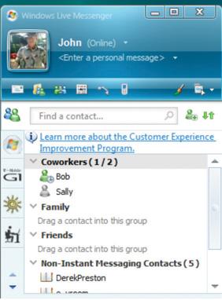

Completing a complex project successfully requires good communication among team members. If those team members work in the same building, they can arrange regular meetings, simply stop by each other’s office space to get a quick answer, or even discuss a project informally at other office functions. Many projects are performed by teams that interact primarily through electronic communication and are, therefore, called virtual teams.Business Dictionary, s.v. “Virtual Team,” http://www.businessdictionary.com/definition/virtual-team.html (accessed January 27, 2010). To avoid miscommunication that can harm trust and to include team members in a project culture, the project team needs a plan for communicating reliably and in a timely manner. This planning begins with understanding two major categories of communication.
If all the parties to the communication are taking part in the exchange at the same time, the communication is synchronous. A telephone conference call is an example of synchronous communication. When the participants are not interacting at the same time, the communication is not synchronous, or asynchronous.
The following are examples of synchronous communications:
Figure 6.2 Instant Messaging Pop-Up Window
The worldwide communication network makes it possible to assemble project teams from anywhere in the world. Most people work during daylight hours, which can make synchronous meetings difficult if the participants are in different time zones, where they start, end, and take meal breaks at different times. It can be an advantage in some circumstances. For example, if something must be done by the start of business tomorrow, team members in Asia can work on the problem during their normal work hours while team members in North America get some sleep.
As the earth turns, the sun appears to move across the sky from east to west. Local noon occurs when the sun is at its highest position in the sky. Cities and countries to the north or south of each other all observe local noon at the same time. For example, noon in New York occurs at the same time as it does in Bogotá, Colombia, in South America. Be aware that many well-educated people in the United States think of South America as directly south of North America. As you can see in Figure 6.4 "World Time Zones", most of South America is one or two time zones east of the United States.
To prevent confusion between a.m. and p.m., times are given using a twenty-four-hour clock. Noon is 12:00 and 1 p.m. is 13:00, and parts of an hour are divided by colons. For example, 13:25:21 is thirteen hours, twenty-five minutes, and twenty-one seconds.
Local time is compared to the time zone that is centered at the historically significant naval observatory at Greenwich, England. The time at that location is Greenwich Mean Time (GMT)Time zone system historically based on the naval observatory at Greenwich, England.. More recent references use UT for Universal Time (UT)Time zone system that is compatible with GMT but without the historical reference. instead of GMT.
A project manager in New York is five time zones west of the reference zone, so the time is given as UT –5 (or GMT –5). If it is noon in the reference zone, it is 7 a.m. (five hours earlier) in New York. The manager would like to contact a project team member in Paris, France. Paris is one time zone west of the reference zone (UT +1 or GMT +1). If it is noon (12:00) in the reference zone, it is 13:00 (1 p.m.) in Paris.
This means that there is a six-hour difference between New York and Paris. If the project manager waits until after lunch to place the call (1 p.m. in New York), it might be too late in the day in Paris (7 p.m.) to reach someone.
Getting a team together at the same time can be a challenge—especially if they are spread out across time zones. Many types of communication do not require that the parties are present at the same time. This type of communication is not synchronous; it is asynchronous. There are several choices of asynchronous communications.
Many companies prefer that final contracts are personally signed by an authorized representative of each party to the agreement. If several signatures are required, this can take weeks to get all the signatures if the contracts are transferred by the postal service. If this process is holding up the start of the project, you can use an overnight delivery service to minimize the time spent transferring the documents.
A telefacsimile (fax) machineDevice that scans a document and converts it to electronic signals that can be transmitted by telephone to another fax machine, which can reproduce the original document. is a device that scans a document a narrow band at a time converting it into tones that can be conveyed over traditional telephone lines to a receiving device that reproduces a facsimileA duplicate (see telefacsimile).—exact duplicate—of the document. A fax machine typically has a paper feeder that can be used for feeding multiple-page documents, a telephone key pad and handset, and a status display, as shown in Figure 6.5 "Fax Machine".
Transmission rates of fax machines are typically limited by the use of traditional telephone lines. The data transmission uses the same method as a dial-up computer modem. A Group 3 fax machineModel of fax machine that uses digital scanning and data compression. has a maximum data rate of 14.4 kilobits per second (Kbps), but if the phone connection is poor, it will drop down to lower speeds automatically until it can establish a reliable connection between machines.
The Group 3 fax machine digitizes data in a form that is compatible with computers and the fax function is often integrated with other computer functions. A multifunction device, such as the one shown in Figure 6.6 "Multifunction Printer, Scanner, Fax, and Copier", can scan a document and save it as an image, send it as a fax, or print multiple copies.
Fax machines have been around a long time and enjoy a high level of trust for transmitting documents accurately. In many countries, a fax of a signed contract is legal, but a computer-scanned image is not.
Electronic mail (e-mail) is widely used to coordinate projects and to communicate between team members. It has several valuable characteristics for project management:
A Web logOnline personal journal. is typically called a blog. It is an online journal that can be private, shared by invitation, or made available to the world. Some project managers keep a journal in which they summarize the day’s challenges and triumphs and the decisions they made. They return to this journal at a later date to review their decision-making process after the results of those decisions are known to see if they can learn from their mistakes. Many decisions in project management are made with incomplete knowledge, and reflecting on previous decisions to develop this decision-making skill is important to growth as a project manager.
Some projects are directly affected by external factors such as political elections, economic trends, corporate mergers, technological or scientific breakthroughs, or weather. To keep informed about these factors, you can subscribe to online news sources. A method that facilitates this process is Really Simple Syndication (RSS)Communications technology that allows news to be sent to a computer screen.. To use an RSS feed, team members download a free news reader on the Internet. Web pages with RSS news feeds have labeled links, as shown in Figure 6.7 "Link to RSS Feed on a Web Page".
Figure 6.7 Link to RSS Feed on a Web Page
If the user clicks on the RSS feed, news from the Web site is automatically sent to the user’s news reader. The news reader can be set to filter the news for key words to limit the stories to those that are relevant to the project.
The following are examples of asynchronous communications:
New technologies for communicating electronically appear with increasing frequency. Using a new technology that is unfamiliar to the team increases the technology complexity, which can cause delays and increase costs. To decide if a new technology should be included in a communications plan, seek answers to the following questions:
Internalize your learning experience by preparing to discuss the following.
If you were managing a functional team that included people from three other countries, which synchronous communications technologies would you include in your communications plan and for what purposes? Which asynchronous technologies would you use and for what purposes? What new technologies would you consider?